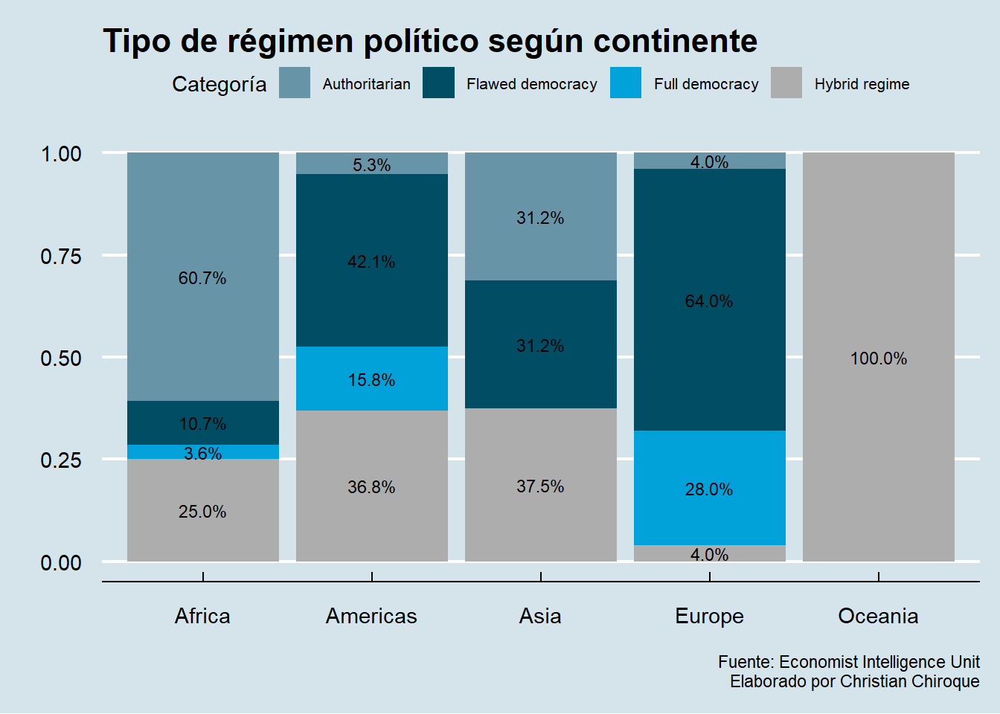

library(tidyverse)
library(readxl)
data<-read_xlsx("data/AML.xlsx")3 Visualización de datos
3.1 Objetivos de la sesión
- Tras familiarizarnos con los principios básicos de la programación en R y la manipulación de sus elementos clave, nos centraremos en la visualización de datos.
3.2 Base de datos
Disponemos de una base de datos que incluye una variedad de indicadores e índices para 95 países alrededor del mundo.
Los datos abarcan: País, Continente, Región, Índice, Índice de Lavado de Activos, Matrícula, PBI per cápita, Pobreza Urbano, Gasto en educación, Índice de Percepción de la Corrupción, Estado de derecho, Índice de Democracia, Categoría del Índice de Democracia, Índice de Crimen Organizado.
Veamos la data rápidamente:
head(data)# A tibble: 6 × 14
Pais Continent Region AML_Index Matricula PBIPC Pobreza URBANO gastoedu
<chr> <chr> <chr> <chr> <dbl> <dbl> <dbl> <dbl> <dbl>
1 Afghanist… Asia South… No se de… 50.1 552. 54.5 26 4.06
2 Albania Europe Centr… 4.75 86.6 5224. 14.3 62.1 2.47
3 Angola Africa Centr… 7.03 11.3 3437. 36.6 66.8 3.42
4 Argentina Americas South… No se de… 90.8 11688. 25.7 92.1 5.46
5 Armenia Asia Centr… 4.72 87.7 4212. 32 63.3 2.71
6 Austria Europe Weste… 4.099999… 87 51230. 3 58.7 5.5
# ℹ 5 more variables: CPI_Index <dbl>, Rule_of_Law <dbl>,
# Democracy_Index <dbl>, Democracy_Index_cat <chr>,
# Organized_Crime_Index <dbl>3.3 Anatomía de un ggplot

ggplot2 es un popular paquete de visualización de datos para el lenguaje de programación R, basado en los principios de la “Gramática de Gráficos”. Esta filosofía de diseño permite a los usuarios construir gráficos complejos y estéticamente agradables a partir de componentes básicos de forma intuitiva y flexible.
El núcleo de ggplot2 radica en su sistema de capas, donde cada gráfico se construye agregando capas que pueden incluir, entre otros, los datos, las estéticas (como color, forma y tamaño), los objetos geométricos (como puntos, líneas y barras), las escalas, y las anotaciones. Este enfoque modular no solo facilita la personalización y optimización de los gráficos sino que también promueve una estructura de código clara y comprensible.
Vamos a hacer un ejemplo paso a paso:
3.3.1 Datos
Es el conjunto de datos a visualizar.
Nuestra primera capa siempre va a ser la data. Sobre esta iniciamos la función ggplot y corroboramos que tenemos un lienzo en blanco.
data |>
ggplot()
3.3.2 Estéticas
Es el diseño básico del gráfico (Aesthetics).
Mapeo de variables a propiedades visuales como color, forma o tamaño, definidas con aes().
A diferencia del lienzo en blanco, ya contamos con un diseño. En este caso, hemos indicado al R que el eje X será la variable Pobreza.
data |>
ggplot()+
aes(x=Pobreza, y=gastoedu)
Advertencia
En ggplot2, las capas de un gráfico se van adicionando secuencialmente utilizando el operador +.
3.3.3 Geometrías (Geoms)
Son representaciones gráficas de los datos, como puntos, líneas o barras (geom_point(), geom_line(), geom_bar(), etc.).
En nuestro ejemplo, podemos agregar la geometría de puntos para hacer un scatterplot o diagrama de dispersión:
data |>
ggplot()+
aes(x=CPI_Index, y=gastoedu)+
geom_point()Warning: Removed 3 rows containing missing values or values outside the scale range
(`geom_point()`).
Nota
En el paquete {ggplot2} existen 30 geometrías disponibles. Puedes ver el detalle de estos en la documentación del paquete.
Esta estructura de capas hace que ggplot2 sea extremadamente útil para explorar y presentar datos de manera efectiva, permitiendo a los usuarios desde principiantes hasta expertos crear visualizaciones de datos complejas y personalizadas con relativa facilidad.
3.3.4 Facetas
Permite descomponer un gráfico en subgráficos, también llamadas cuadrículas o facetas, según una variable cualitativa.
Sirve para comparar grupos, separándolos y así facilitando la identificación de diferencias significativas entre estos.
data |>
ggplot()+
aes(x=CPI_Index, y=gastoedu)+
geom_point() +
facet_wrap(~Continent)Warning: Removed 3 rows containing missing values or values outside the scale range
(`geom_point()`).En este punto podemos agregar también un color distinto a cada continente:
data |>
ggplot()+
aes(x=CPI_Index, y=gastoedu)+
geom_point() +
facet_wrap(~Continent)+
aes(color=Continent)Warning: Removed 3 rows containing missing values or values outside the scale range
(`geom_point()`).3.3.5 Estadísticas
Permite adicionar geometrías basados estadísticos específicos calculados a partir de los datos de insumo.
Por ejemplo, se puede colocar la media de una variable numérica.
data |>
ggplot()+
aes(x=CPI_Index, y=gastoedu)+
aes(color=Continent)+
geom_point()+
geom_hline(aes(yintercept = mean(gastoedu)), linetype = "dotdash", color = "blue")Warning: Removed 3 rows containing missing values or values outside the scale range
(`geom_point()`).3.3.6 Coordenadas
Define el sistema de coordenadas usado para el gráfico. Puede ser cartesiano (por default), polar, etc.
data |>
ggplot()+
aes(x=CPI_Index, y=gastoedu)+
aes(color=Continent)+
geom_point()+
scale_x_log10()Warning: Removed 3 rows containing missing values or values outside the scale range
(`geom_point()`).
También podemos editar a nivel de las etiquetas que es súmamente importante para que el lector identifique a qué se refiere cada eje.
data |>
ggplot()+
aes(x=CPI_Index, y=gastoedu)+
aes(color=Continent)+
geom_point(size=2)+
labs(title="Gráfico de dispersión de gasto en educación y el Índice de Corrupción",
subtitle="Año 2018",
caption="Fuente: FMI\nElaboración Propia",
x="Índice de Corrupción",
y="Gasto público en educación (% PBI)")Warning: Removed 3 rows containing missing values or values outside the scale range
(`geom_point()`).3.3.7 Temas
Controla los aspectos no relacionados con los datos del gráfico, como la fuente, colores de fondo, líneas de cuadrícula, márgenes, etc.
Funciones: theme_gray(), theme_bw(), theme_classic()
Se puede crear un tema para que se adapte a la imagen institucional de una organización o al tipo de diseño de un documento específico.
Se modifican temas tales como el color del fondo, los ejes, tamaño del gráfico, grilla, posición de los nombres, entre otros.
data |>
ggplot()+
aes(x=CPI_Index, y=gastoedu)+
aes(color=Continent)+
geom_point(size=2)+
labs(title="Gráfico de dispersión de gasto en educación y el Índice de Corrupción",
subtitle="Año 2018",
caption="Fuente: FMI\nElaboración Propia",
x="Índice de Corrupción",
y="Gasto público en educación (% PBI)")+
theme_classic()Warning: Removed 3 rows containing missing values or values outside the scale range
(`geom_point()`).También te sugiero ver este video de soporte
3.4 Para variables categóricas
Dependiendo del tipo de variables que se analizan, las técnicas y herramientas de visualización varían. A continuación, se describen las aproximaciones recomendadas para visualizar datos, diferenciando entre variables categóricas y numéricas.
3.4.1 Gráfico de barras simple
En un gráfico de barras vertical,las categorías se representan en el eje horizontal y la frecuencia o cantidad en el eje vertical.
El gráfico de barras es una herramienta útil para comparar la frecuencia o cantidad de diferentes categorías o variables en un conjunto de datos.
Utilizamos la función geom_bar(). El resultado es que la función ha CONTADO la frecuencia de cada categoría de DemocracyIndexCat
data |> # Data
ggplot() + # Iniciamos la construcción del gráfico con ggplot
aes(x = Democracy_Index_cat) + # Establecemos la variable como el eje x
geom_bar() # Creamos un gráfico de barras basado en el conteo de 'continent'
En algunas ocasiones ya contamos con el conteo realizado y sólo deseamos el gráfico. Para ello utilizamos el ARGUMENTO stat=“identity”.
Un caso como el siguiente:
data |>
count(Democracy_Index_cat)# A tibble: 5 × 2
Democracy_Index_cat n
<chr> <int>
1 Authoritarian 24
2 Flawed democracy 32
3 Full democracy 11
4 Hybrid regime 23
5 <NA> 5En estos casos utilizamos la función:
data |>
count(Democracy_Index_cat) |>
ggplot() +
aes(y = n, x=Democracy_Index_cat) + #En este caso le he tenido que especificar tanto x como y!
geom_bar(stat="identity") 
Agregando etiquetas de los datos y nombres de los ejes:
data |>
count(Democracy_Index_cat) |>
ggplot() +
aes(y = n, x=Democracy_Index_cat) + #En este caso le he tenido que especificar tanto x como y!
geom_bar(stat="identity")+
geom_text(aes(label=n, vjust=-1, size=3))+
labs(x="Tipo de régimen", y="Frecuencia")
Nota
Aunque los gráficos de pie son ampliamente reconocidos y frecuentemente utilizados para mostrar proporciones de un todo, en la práctica suelen ser menos efectivos que los gráficos de barras. Esto se debe a que los gráficos de barras ofrecen una comparación más clara y precisa entre categorías, facilitando la interpretación de las diferencias en magnitud.
3.4.2 Gráfico de barras acumulada
Un gráfico de barras apiladas (acumuladas) es una forma de visualizar datos categóricos donde cada barra representa una categoría y las subcategorías se apilan una encima de otra dentro de la misma barra. Esto permite ver tanto el total de cada categoría como la contribución de cada subcategoría al total.
data |>
drop_na(Continent, Democracy_Index_cat) |>
ggplot()+
aes(x = Continent, fill = Democracy_Index_cat)+
geom_bar(position = "fill")Podemos personalizar el gráfico un poco más. Cómo lo presentaría el propio equipo de The Economist?
library(ggthemes)Warning: package 'ggthemes' was built under R version 4.4.1data |>
drop_na(Continent, Democracy_Index_cat) |>
ggplot()+
aes(x = Continent, fill = Democracy_Index_cat)+
geom_bar(position = "fill")+
geom_text(aes(label = scales::percent(after_stat(count)/tapply(after_stat(count), after_stat(x), sum)[after_stat(x)], accuracy = 0.1)), size=3,
stat = "count",
position = position_fill(vjust = 0.5)) +
labs(title="Tipo de régimen político según continente",
x="",
y="",
fill = "Categoría",
caption="Fuente: Economist Intelligence Unit\nElaborado por Christian Chiroque") +
theme_economist() + scale_fill_economist() + theme(legend.text = element_text(size = 8))
Sobre geom_text()
Dentro de geom_text, estamos utilizando la función aes() para definir la estética del texto, específicamente la etiqueta (label) que se mostrará en cada segmento de la barra apilada. El cálculo dentro de aes(label = …) utiliza scales::percent() para convertir un valor en un formato de porcentaje con una precisión de un decimal, lo cual se especifica con accuracy = 0.1. El valor dentro de scales::percent() se calcula como el conteo de observaciones (after_stat(count)) dividido por el total de observaciones en la categoría correspondiente del eje x, obtenido mediante tapply(after_stat(count), after_stat(x), sum)[after_stat(x)], donde after_stat(count) accede al conteo generado por ggplot2 y after_stat(x) accede a las categorías del eje x. Este cálculo da como resultado la proporción de cada subcategoría dentro de su categoría principal. La función geom_text() también incluye stat = “count”, lo que indica que las etiquetas se basan en los conteos de las barras, y position = position_fill(vjust = 0.5), que posiciona las etiquetas en el centro de cada segmento apilado de la barra (vjust = 0.5 centra verticalmente las etiquetas en cada subcategoría). Finalmente, size = 3 ajusta el tamaño del texto de las etiquetas, haciéndolo más pequeño para mejorar la legibilidad del gráfico.
3.5 Para variables numéricas
3.5.1 Boxplot

Es utilizado para representar la distribución de un conjunto de datos numéricos a través de sus cuartiles.
El gráfico consiste en una caja que representa el rango intercuartil (IQR),es decir, la diferencia entre el tercer cuartil (Q3) y el primer cuartil(Q1).
Dentro de la caja,se dibuja una línea que representa la mediana.
Los bigotes,que se extienden desde la caja, indican el rango de los datos que se encuentran dentro de un cierto múltiplo del IQR, generalmente 1.5 veces el IQR.
data |>
ggplot() +
aes(y = PBIPC) +
geom_boxplot()Los valores que están por encima o por debajo de los bigotes se representan como puntos o asteriscos, que se conocen como valores atípicos.
El boxplot es útil para identificar valores atípicos y para comparar la distribución de varios conjuntos de datos en un solo gráfico. También permite visualizar la simetría o asimetría de la distribución y la presencia de sesgo.
Puedes probar este video sugerido:
También puedes solicitar boxplot por grupos:
data |>
ggplot() +
aes(y = PBIPC, colour=Continent) +
geom_boxplot() +
labs(title="PBI per cápita ($) según continente",
caption="Gapminder Dataset") +
theme_stata() + scale_color_stata()¿qué nos dice este gráfico?
3.5.2 Histograma
Un histograma es un tipo de gráfico utilizado en estadísticas para representar la distribución de un conjunto de datos numéricos mediante barras. Cada barra en un histograma representa la frecuencia (número de veces que ocurren) de datos dentro de un intervalo o “bin” específico.
Los bins dividen el espectro completo de los datos en series de intervalos consecutivos, y son todos de igual tamaño. La altura de cada barra muestra cuántos datos caen dentro de cada intervalo.
data |>
ggplot() +
aes(x=PBIPC) +
geom_histogram()`stat_bin()` using `bins = 30`. Pick better value with `binwidth`.Los histogramas permiten observar cómo se distribuyen los datos, revelando si están equilibradamente repartidos o inclinados hacia un extremo. Una distribución es simétrica cuando las mitades a ambos lados de la media son imágenes espejo.
Si está sesgada hacia la derecha, significa que hay una acumulación de datos hacia el lado izquierdo del gráfico, con una cola que se extiende hacia la derecha. Como en el caso del gráfico de líneas arriba.
Por otro lado, un sesgo hacia la izquierda indica una concentración de datos hacia la derecha, con una cola que se alarga hacia la izquierda. Los histogramas también muestran si los datos se agrupan en torno a varios valores centrales, evidenciado por la presencia de varios picos o “modas”.
Así como nuestros gráficos anteriores, podemos personalizar mucho más nuestro gráfico:
data |>
ggplot() +
aes(x=PBIPC) +
geom_histogram()+
geom_vline(xintercept = mean(data$PBIPC), color = "red")+
geom_vline(xintercept = median(data$PBIPC), color = "green")`stat_bin()` using `bins = 30`. Pick better value with `binwidth`.3.5.3 Gráfico de línea
El gráfico de líneas es una herramienta de visualización de datos que conecta puntos de datos individuales con líneas, mostrando tendencias o cambios en una variable numérica a lo largo del tiempo o de otra variable numérica. Sirve principalmente para visualizar la evolución de una o varias cantidades, permitiendo identificar patrones, tendencias, picos, y caídas en los datos a lo largo de un período o rango específico.
library(readxl)
CPI<-read_xlsx("data/CPI.xlsx")Cómo evolucionó Perú y Bolivia en el CPI score desde el 2017?.
CPI |>
filter(country=="Peru"|country=="Bolivia" |country=="Italy") |>
ggplot() +
aes(x=year, y=cpi_score, color=country)+
geom_line()+
geom_point()+
ylim(0, 80)+
geom_text(aes(label=round(cpi_score, 1)),
vjust=-0.5,
hjust=1.2) 3.5.4 Gráfico de dispersión
Ya lo habíamos visto arriba pero lo definimos también. Un gráfico de dispersión, también conocido como diagrama de dispersión o scatter plot, es un tipo de gráfico que utiliza coordenadas cartesianas para mostrar la relación entre dos variables numéricas. Cada punto en el gráfico representa un par de valores (x, y), donde la posición en el eje horizontal (x) corresponde a una variable y la posición en el eje vertical (y) corresponde a la otra variable.
data |>
ggplot()+
aes(x=CPI_Index, y=Democracy_Index)+
aes(color=Continent)+
geom_point(size=2)+
labs(title="Gráfico de dispersión de Índice de Democracia y el Índice de Corrupción",
subtitle="Año 2018",
caption="Fuente: The Economist y Transparency International\nElaboración Propia",
x="Índice de Corrupción",
y="Democracy Index")+
theme_economist() + scale_colour_economist()+
theme(plot.title = element_text(size = 12),
plot.subtitle = element_text(size = 10),
legend.title = element_text(size = 10),
legend.text = element_text(size = 8))Warning: Removed 6 rows containing missing values or values outside the scale range
(`geom_point()`).3.6 Ggplot interactivo
ggplotly es una función del paquete plotly en R que permite convertir gráficos estáticos creados con ggplot2 en gráficos interactivos. Esta conversión enriquece la experiencia del usuario al permitir la interacción con los gráficos, como hacer zoom, desplazar, y mostrar información adicional mediante tooltips (cuadros emergentes).
Esto es especialmente útil para explorar datos de manera más dinámica y obtener insights adicionales que no son posibles con gráficos estáticos.
library(plotly)Veamos nuevamente el gráfico de dispersión anterior:
grafico_plano<-data |>
ggplot()+
aes(x=CPI_Index, y=Democracy_Index, label=Pais)+
aes(color=Continent)+
geom_point(size=2)+
labs(title="Gráfico de dispersión de Índice de Democracia y el Índice de Corrupción",
subtitle="Año 2018",
caption="Fuente: The Economist y Transparency International\nElaboración Propia",
x="Índice de Corrupción",
y="Democracy Index")+
theme_economist() + scale_colour_economist() +
theme(plot.title = element_text(size = 12),
plot.subtitle = element_text(size = 10),
legend.title = element_text(size = 10),
legend.text = element_text(size = 8))Lo convertimos en interactivo:
grafico_interactivo<-ggplotly(grafico_plano)
grafico_interactivo
Advertencia
Los gráficos interactivos funcionan mejor en archivos HTML, documentos R Markdown (con output: html_document), y Jupyter Notebooks, permitiendo zoom, tooltips, y paneo, ideales para presentaciones web y dashboards interactivos.